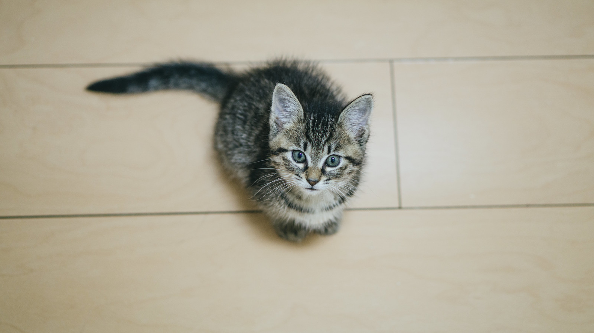

猫対談 ＃8
2/20 2021
カテゴリー：猫対談
こんにちは。不定期更新の猫対談のお時間です。好評を頂きまして8回目の実現となりました。今回のゲストは
人気猫のマルちゃん ♂(6)とさくらちゃん ♂(8)です。とてもそっくりとSNSでも話題の2匹の対談です。
いよいよ初のご対面の2匹ですが、最初は緊張気味で始まりました。お互いに様子を伺っています。
まず最初に動き始めたのはマルちゃん。どうやら一緒に遊びたい様子。
うずうず動いてさくらちゃんを誘っています。が、なかなか距離が縮まらない2匹。
ここでおもちゃを2匹の間に投げてみます。

すると2匹は飛びついてめちゃくちゃじゃれあっています。一気に距離が縮まり、おもち ゃをさしおいて2匹でじゃれあい始めました。どうやら意気投合した様子。
だんだん遊び疲れて最後にはうとうと眠ってしまう2匹なのでした。
この様子を動画で見たい方は、Youtubeへ！
今日のにゃんこ 2/8
2/8 2021
カテゴリー：今日のにゃんこ

今日ご紹介するのは、千葉県にお住まいの チョコちゃん。♀ （2）
野良猫出身で、よく近所に遊びにきていたところを飼い主の佐藤さんが保護。家族の一員になって半年です。
最近ハマっているのは、おやつのちゅーる。ちゅーるの入っている棚を開けるとすぐに飛んでくるそうです。
甘えん坊のチョコちゃんは飼い主さんが大好きで、佐藤さんが台所に立っていると体に木登りをするみたいに上ってくるそう。ずっとくっついていたいチョコちゃんなのでした。
チョコちゃんのinstagramはコチラ
月間猫じゃらし2021年 2月号
2/1 2021
カテゴリー：月間猫じゃらし
ゴンとチャーはもうおじいちゃんなので子猫みたいには遊びませんが、兄弟なので毎日仲良くじゃれあっています。それをずっと眺めているとあっという間に午前が終わってしまいますね。
さて、最近のエピソード。猫っていろんな場所に隠れますよね。人間以上に気温や寝心地に敏感なので、冬はあったかく夏は涼しい所。自分のお気に入りの場所を探して寝ているんだと思いますが、驚くところに隠れていたうちの猫。
まさかのオーブントースターのうしろ。
今までも色んなところに隠れてくれましたが、また新しく発見したようです。よくそんなところに入れたね？あったかいのかな？
見当たらないなと思って家中探してもいないので途方に暮れているとキッチンから物音がしたので見たらね、裏にいたんですよ。思わず笑っちゃいました。
うちの猫たちの隠れた場所一覧↓
- 洗面所のタオルをしまっている棚（タオルと一体化してた）
- 押入れの隙間（すごく奥のほう）
- ベッドと壁の隙間（狭い）
- テレビの裏
- 家の庭にいつのまにか出ていた（脱走）
せまいところはあるあるですかね？ではまた来月！
ネコフェス
1/26 2021
カテゴリー：イベント
ネコフェスの時期がやってきました！コロナウイルスの影響の為、今回はオンラインでの開催となります。
開催期間限定の、グッズ販売や写真展など無料で楽しめるものや、チケット購入で楽しめるコンテンツなど盛りだくさん！
【詳細】↓↓↓↓
開催日： 2021年3月12日（金）～3月21日（日）
※人気猫対談ライブ 第1弾 3月12日（金） 20：00～ 出演（coco/ハナ/ゴン）
第2弾 3月13日（土） 19：30～ 出演（チャー/さくら）
第3弾 3月20日（土） 19：30～ 出演（マル/ゴン）
第4弾 3月21日（日） 19：30～ 出演（チャー/ハナ）
開催期間中毎日 20：30～22：00 ラジオ配信
料金： 無料エリア ￥0
有料エリア ￥2.500（グッズ付き）
イベント内容：無料エリア グッズ販売/写真展（一部）/ラジオ配信視聴
有料エリア オンラインライブ鑑賞/限定写真展/購入者限定プレゼント 他
場所：公式HPよりアクセス https://nekofes.../../../..neko/
主催：cat world.
企画：株式会社cat comit
3月開催です！我が家の兄弟猫もライブにて参加予定。チケット販売は2月10日～ お楽しみに！